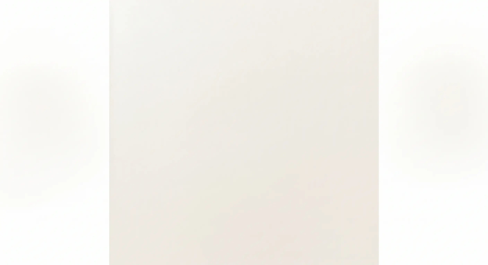
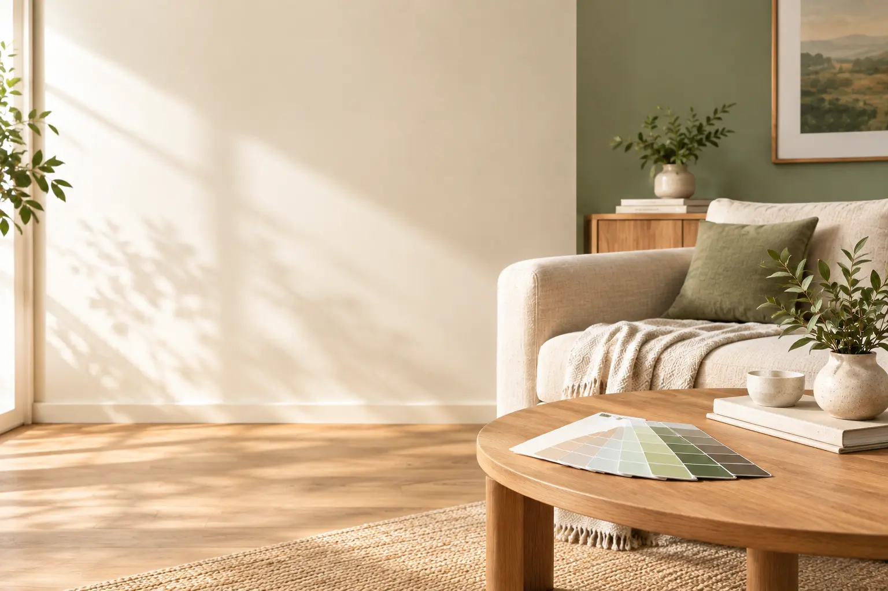
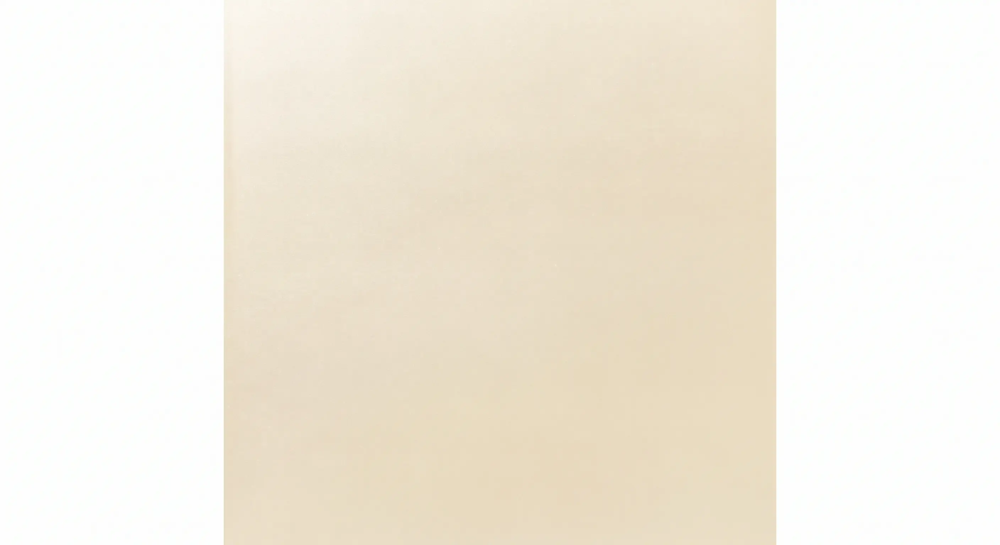
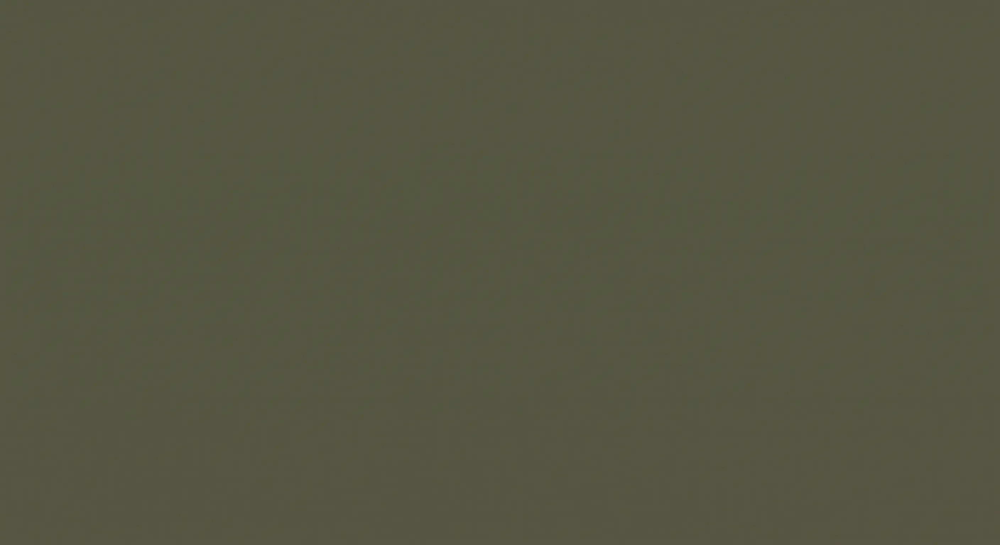

Blanco Perla
Tono luminoso de fondo neutro, ideal para maximizar la amplitud y claridad en interiores.
Color · Inspiración · Proyecto
Explora nuestra nueva selección de tonos inspirada en catálogos profesionales internacionales. Cada color ha sido formulado para acompañar ambientes contemporáneos y clásicos con la calidad de Dekora.
Los colores mostrados son referenciales. La apariencia final puede variar según la iluminación y la superficie de aplicación.
¿Buscas un color o asesoría especial?
Catálogo Oficial Dekora
Selecciona y visualiza cada tonalidad individualmente con su descripción oficial del catálogo de pinturas látex y recubrimientos.

Tono luminoso de fondo neutro, ideal para maximizar la amplitud y claridad en interiores.

Calidez sutil que aporta elegancia discreta y un ambiente acogedor a salas y pasillos.
Inspirado en texturas naturales, perfecto para generar armonía y continuidad visual.
Gris contemporáneo de carácter versátil, excelente para fachadas y oficinas modernas.
Un tono medio sofisticado que estructura los espacios aportando profundidad y distinción.
Matiz terroso y cálido que evoca tradición y conexión con la naturaleza en muros de acento.
Profundo y elegante, diseñado para otorgar un carácter imponente y limpio en exteriores o estudios.

Equilibrio orgánico y calmante que conecta los espacios interiores con la vegetación exterior.
¿Necesitas orientación?